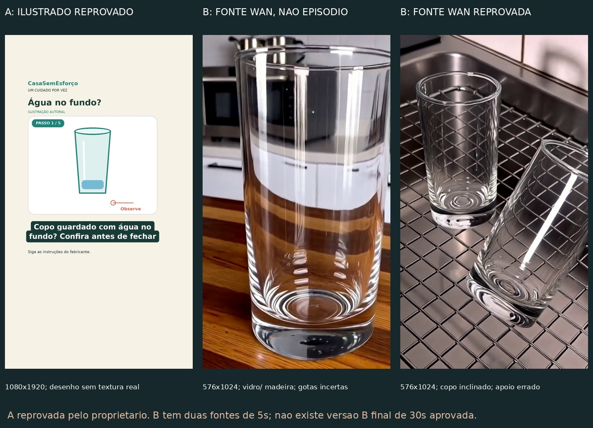
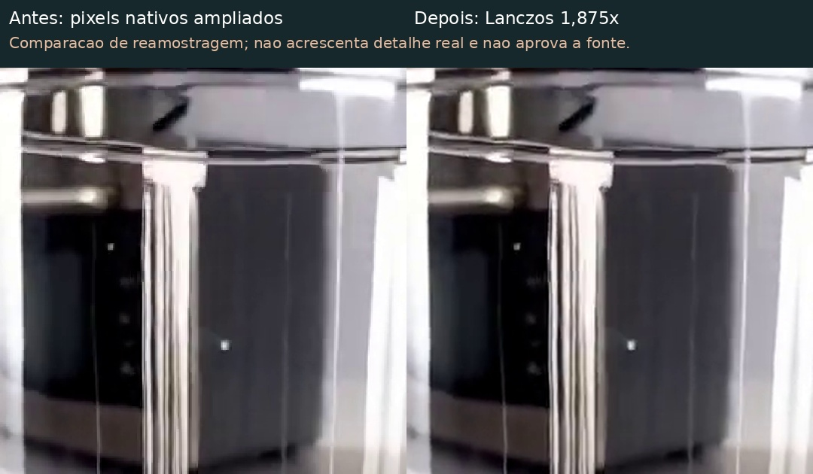

Recuperação da qualidade fotorrealista
Não existe episódio B de 30 segundos aprovado. Nada novo foi agendado ou publicado nesta missão.
Versão A: qualidade visual reprovada
O episódio ilustrado da Missão 15 permanece preservado como histórico. A decisão do proprietário é definitiva para esses arquivos: VISUAL_STYLE_NOT_PHOTOREALISTIC. Uma futura aprovação da voz não libera esse vídeo.
Fonte Wan 0 — 5,04 s
576 × 1024 nativos. Vidro e ambiente com aparência realista; as gotas exigidas pelo problema não estão claramente demonstradas. Candidata preservada para outra função narrativa, sem aprovação para publicação.
Fonte Wan 1 — reprovada
576 × 1024 nativos. Um copo aparece inclinado sobre a lateral. A disposição contraria a demonstração de apoio estável e secagem proposta.
Comparação de quadros

As fontes novas mostram vidro, reflexos, madeira e iluminação com aparência de filmagem. Isso não demonstra que exista uma versão B completa superior: a coerência narrativa e física ainda impede a montagem.
Definição original e ampliação

Reamostragem convencional não acrescenta detalhes reais. Nenhuma fonte foi reclassificada como Full HD nativo por exportação.
Relatório, licenças, testes e estado da produção
Fontes geradas com texto próprio pelo modelo FastWan2.2 fixado e licenciado Apache 2.0, em ZeroGPU gratuito. Não são MP4s finais com narração. Lara continua aguardando aprovação perceptual.